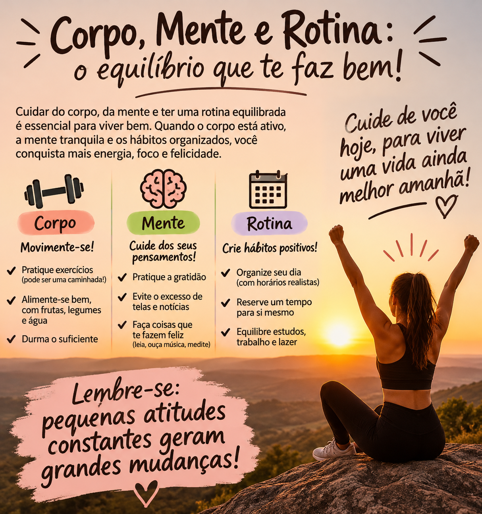

Corpo, Mente e Rotina
O equilíbrio que faz bem!
Pequenas atitudes, grandes mudanças
Cuidar do corpo, da mente e manter uma rotina equilibrada é essencial para ter uma vida mais saudável e feliz. Para isso, podemos adotar pequenas atitudes no dia a dia, como praticar atividades físicas, ter uma alimentação variada, dormir bem, beber água, cultivar pensamentos positivos e reservar momentos para descansar e fazer o que gostamos.
O segredo para viver bem é encontrar o equilíbrio entre nossas responsabilidades e o autocuidado. Pequenas mudanças diárias podem trazer grandes benefícios para nossa qualidade de vida.

Uma mensagem para você
"Cuide do seu corpo, fortaleça sua mente e organize sua rotina. Cada novo dia é uma oportunidade de ser melhor e viver mais feliz!"